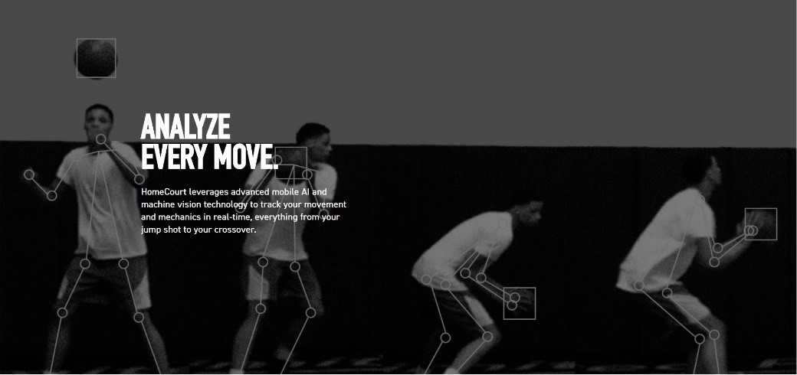
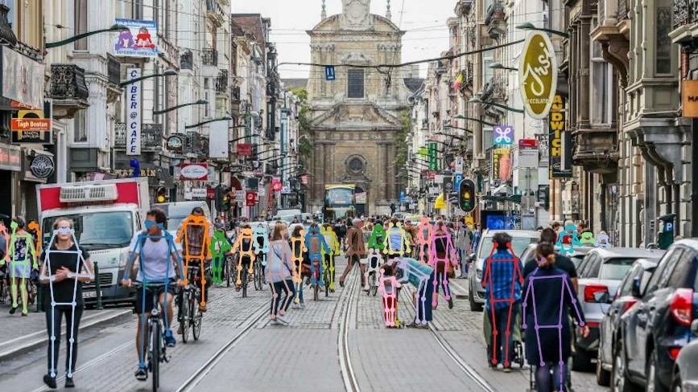
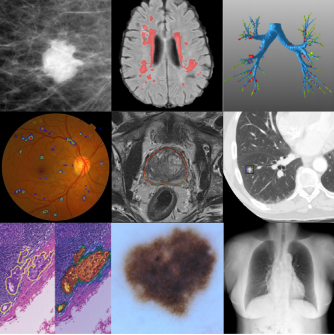
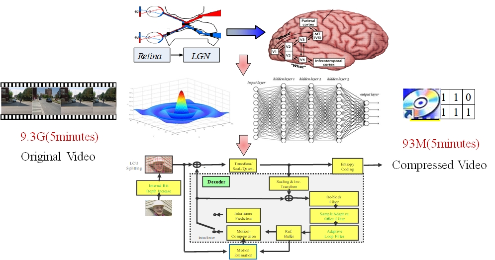
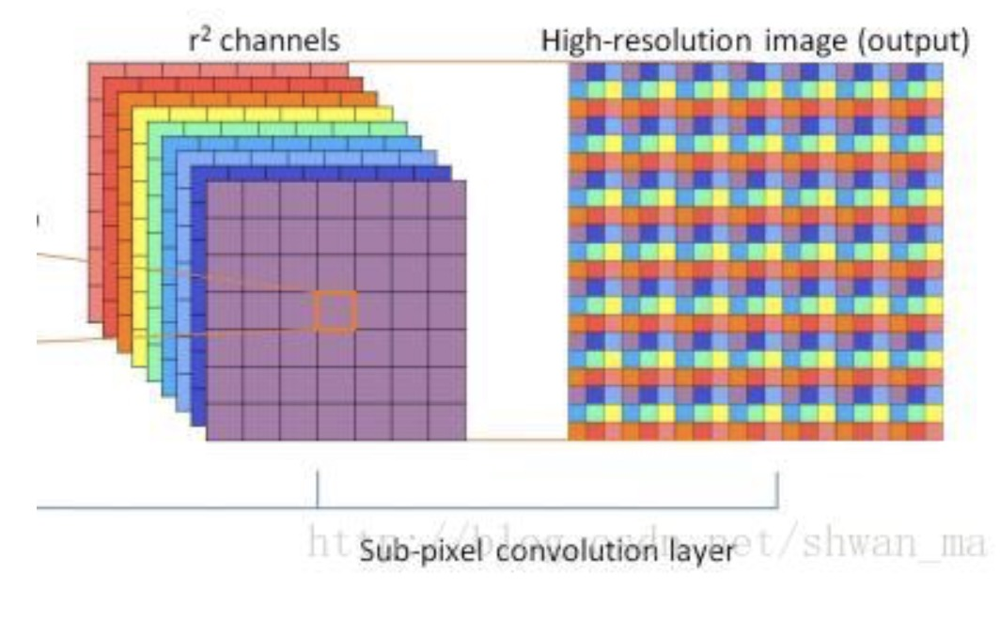
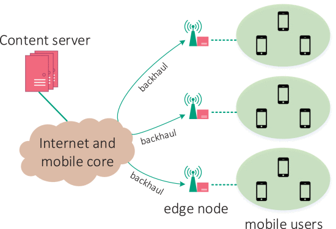

|  |
Human pose estimation is a fundamental task in computer vision. The goal is to localize human anatomical joints (also known as keypoints - elbows, wrists, etc) in images or videos, followed by grouping them into person instances. It has many applications, including human-computer interaction, augmented reality, animation, etc. |
|  |
Human action recognition and prediction is a fundamental challenging problem in computer vision, where action recognition is to infer human actions (present state) based upon complete action executions, and action prediction to predict human actions (future state) based upon incomplete action executions. It has many applications, including visual surveillance, autonomous vehicle, etc. |
|  |
Specific to the medical image processing, the deep learning based methods not only can lighten the visual fatigue for doctors, but also can raise the precision of diagnosis. Focusing on the brain CT images, we have launched a series of researches. First, the automatic segmentation of the Intracerebral hemorrhage (ICH). The volume of the ICH is essential for quantification and treatment planning, but existing methods for the ICH volume estimation have problems of low precision and high time consumption. To realize the fast and accurate volume acquisition, we designed a deep learning based architecture to segment the ICH from the CT images. Further, we are trying to combine the physiological information of the patients and the CT images to make a short-term prediction of the ICH volume changes. It will directly guide follow-up treatment plan. |
|  |
Our research focuses on the exploration of human visual system and the visual signal processing, the modeling of vision computing and the compression of image and video, aiming at achieveing highly compact representation for image and video. |
|  |
We construct models to fit the coding properties of video coding standards such as H.264, H.265 and H.266, in order to improve the R-D performance of the codec and speed up coding. Moreover, we also design convolutional neural network to replace modules of coding standards, or add new modules to improve coding efficiency. |
|  |
Our research focuses on media streaming and network protocol optimization. We are committed to identifying the enabling techniques toward efficient network operation, and developing elegant and effective algorithms to enhance the quality of user experience and network performance. |
Copyright © 2020. Multimedia and Communication Network Center